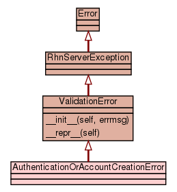

Class AuthenticationOrAccountCreationError
source code

Class that can represent different things depending on context: While
logging in with an existing user it represents a username or password
being incorrect. While creating a new account, it represents the username
already being taken or the user not being allowed to create an account.
Optimally these different things would be different exceptions, but there
are single fault codes the server can return to the client that can mean
more than one of them so we have no way of knowing which is actually
intended.